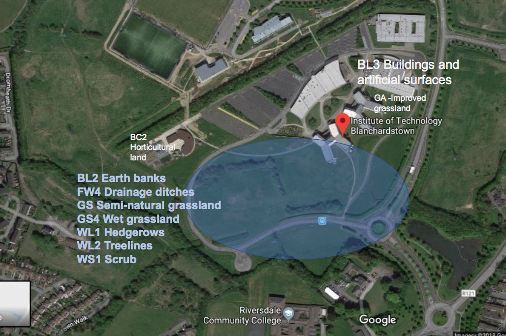
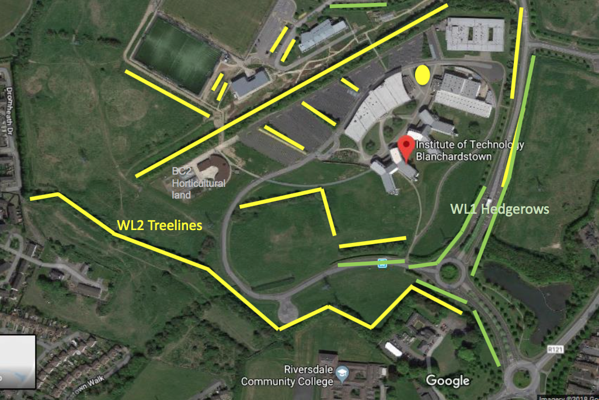
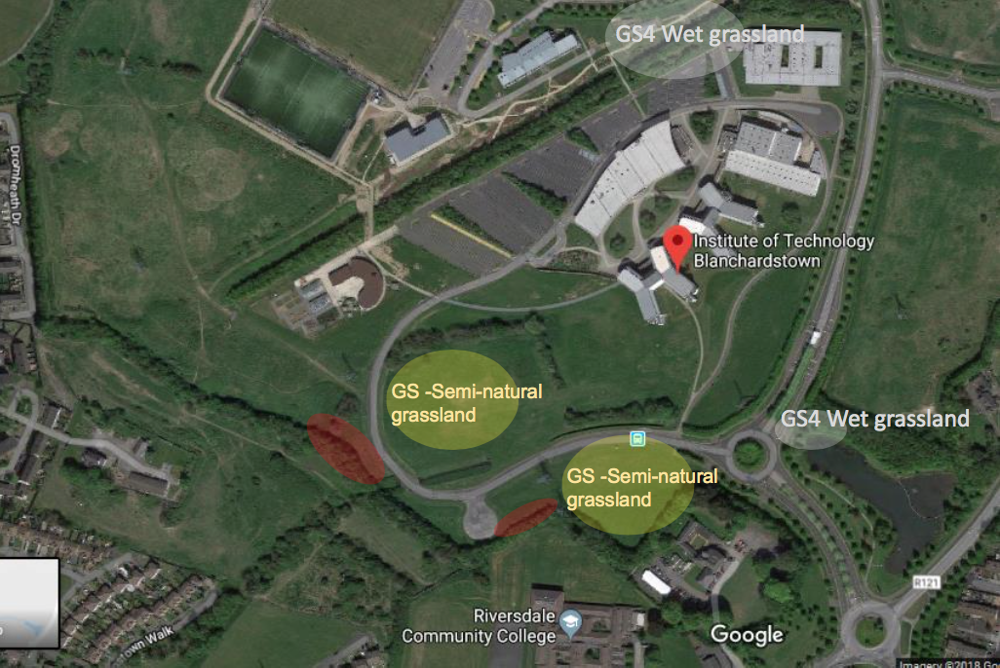
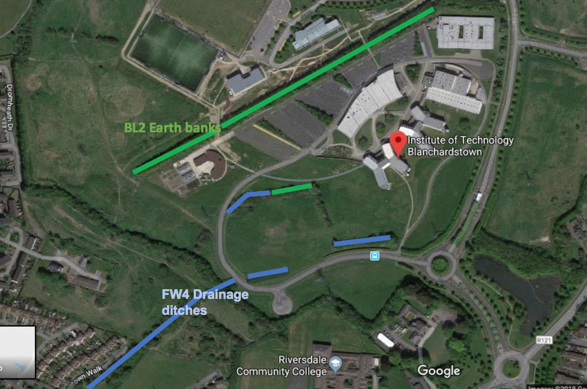
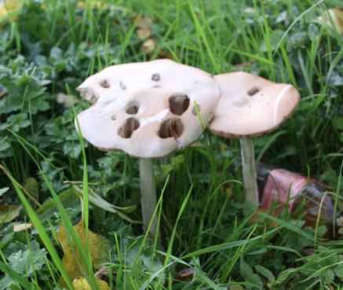

The aim of this page is to educate and inform the students of the different plants and wildlife still present on ITB's campus. Our campus is an important resource for the local communities but also provides habitats for many species of flora and fauna. Buzzards and other animals live in the rough grass and hunt other animals and plants to eat. There are plenty of rabbits in this grassland as the medeows are perfect for them. Here is an image of the hedges, trees, wet grassland and earth banks surrounding ITB's campus.

This next image shows the treelines and hedgegrows around the campus. Loths of rabbits and small animals live here.

This image shows some wet grassland where frogs and tadpoles could live and also some semi-natural grassland.

The fourth image shows the earth banks and drainage ditches where animals would go to hide or live.

Along with all these animals there are some mushrooms scattered around the college campus. Here is an image of a wild mushroom.

All this nature is beautiful to see around the campus and we hope to preserve it for as long as possible!